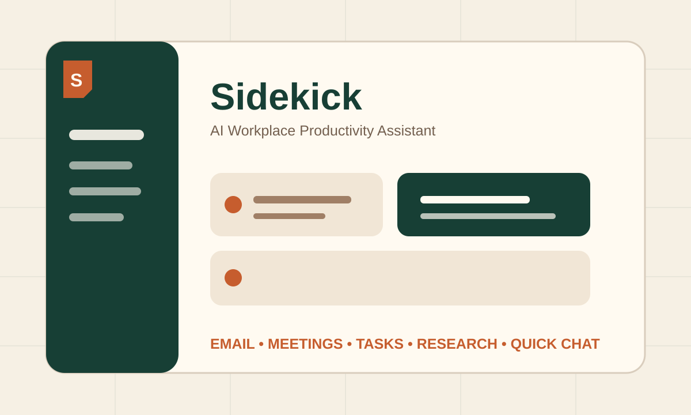
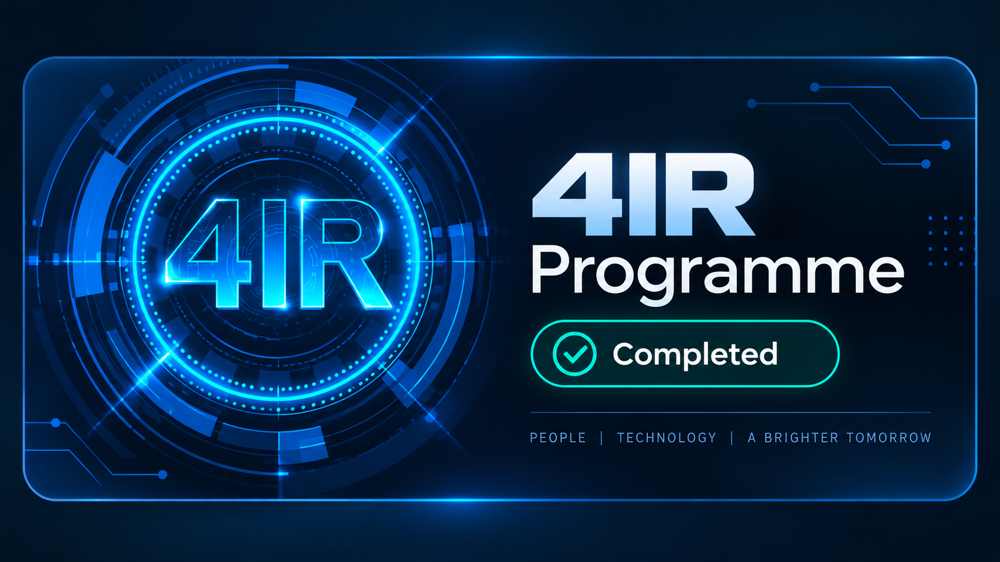
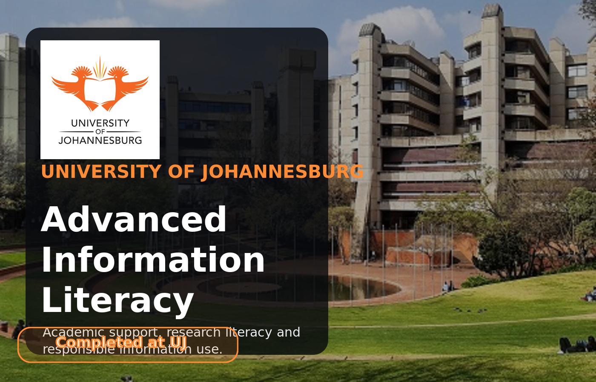
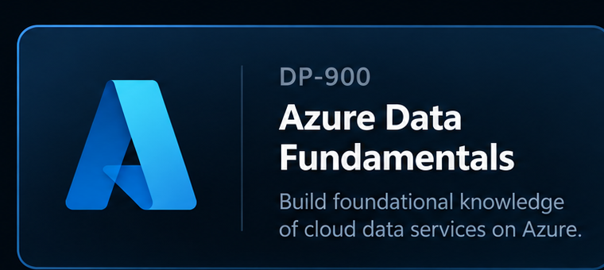
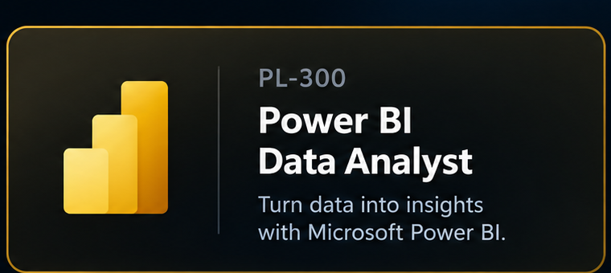

SQL
Queries, relational data and database fundamentals.
● ProficientTshedza Lungelo Mabaso — aspiring Data Engineer & Data Scientist.
I am a University of Johannesburg student building practical experience across data analysis, programming, AI-assisted workflows and information systems. I learn by creating projects that turn ideas and raw information into useful digital solutions.

01 / ABOUT
I am currently completing a BCom in Information Systems at the University of Johannesburg, with my final year expected in 2027. My long-term goal is to work in Data Engineering and Data Science, where I can combine programming, databases, analytics and business understanding.
My strongest programming areas are SQL and C#. I am continuing to improve Python and my web-development skills through projects, while applying Microsoft Excel and Data Analysis in my UJ studies.
Building practical evidence through coursework, hackathons and portfolio projects.
02 / SKILLS
I prefer to show where I am strong and where I am still developing rather than overstate experience.
Queries, relational data and database fundamentals.
● ProficientProgramming, logic and software-development coursework.
● ProficientData projects, CSV processing and programming practice.
◆ DevelopingAcademic data analysis, formulas, charts and dashboards.
✓ Applied at UJStructuring, interpreting and presenting data for insight.
✓ Academic experienceVisualisation and reporting; PL-300 preparation in progress.
◆ DevelopingData and cloud fundamentals; DP-900 preparation in progress.
◆ DevelopingResponsive interfaces built while learning through projects.
○ BeginnerProject hosting, repositories and GitHub Pages deployment.
◆ Developing03 / PROJECTS
Each featured project links to a live prototype or project evidence — not just a description.
A student support and communication hub developed with my team during a UJ DEV Society hackathon. The prototype combines campus updates, service routing, support-request tracking, digital queues, accessibility features and simulated campus-bus tracking.

Open live site ↗An AI-powered workplace productivity assistant prototype for professional emails, meeting summaries, task planning, research support and contextual quick chat. Built with prompt engineering, responsible-AI safeguards, local persistence and accessible UX.
 View project ↗
View project ↗A guided analytics project that transforms electronics sales records into monthly summaries, KPIs and visual trends for management reporting.
 View code ↗
View code ↗A beginner Python project that reads structured CSV data, calculates student and subject averages, ranks performance and identifies strengths and improvement areas.
04 / EDUCATION & CREDENTIALS
My education and certification cards now use custom picture-based visuals built from the portfolio images I selected.
University of Johannesburg • 2025–Present
Final year expected in 2027
University of Johannesburg
Technology & future-skills development
University of Johannesburg
Academic achievement
Azure Data Fundamentals
Target: complete by end of September 2026
Power BI Data Analyst
Target: complete by end of September 202605 / CONTACT
I am looking for internship and graduate opportunities where I can keep learning while contributing to data, analytics, information systems and technology projects.